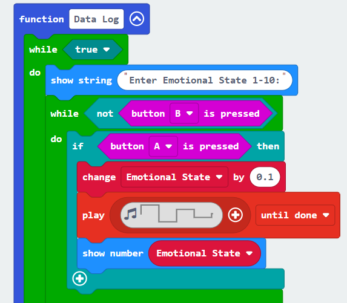

Adding a .mp4 VIDEO file uploaded to code.org
Investigage
In 1924, a team of aviators from the USA successfully completed the first-ever circumnavigation of the globe by airplane, a feat that took 175 days, 76 stops, a cache of 15 Liberty engines, 14 spare pontoons, four aircraft and two sets of new wings. This achievement ushered in an era of international air travel, and nearly a century later, travelers are still creating their own round-the-world itineraries.
|
 |
Put Your Explanation Here |
Plan
In 1924, a team of aviators from the USA successfully completed the first-ever circumnavigation of the globe by airplane, a feat that took 175 days, 76 stops, a cache of 15 Liberty engines, 14 spare pontoons, four aircraft and two sets of new wings. This achievement ushered in an era of international air travel, and nearly a century later, travelers are still creating their own round-the-world itineraries.
|
|
Put Your Explanation Here |
Design
In 1924, a team of aviators from the USA successfully completed the first-ever circumnavigation of the globe by airplane, a feat that took 175 days, 76 stops, a cache of 15 Liberty engines, 14 spare pontoons, four aircraft and two sets of new wings. This achievement ushered in an era of international air travel, and nearly a century later, travelers are still creating their own round-the-world itineraries.
Implement
In 1924, a team of aviators from the USA successfully completed the first-ever circumnavigation of the globe by airplane, a feat that took 175 days, 76 stops, a cache of 15 Liberty engines, 14 spare pontoons, four aircraft and two sets of new wings. This achievement ushered in an era of international air travel, and nearly a century later, travelers are still creating their own round-the-world itineraries.
Evaluate
In 1924, a team of aviators from the USA successfully completed the first-ever circumnavigation of the globe by airplane, a feat that took 175 days, 76 stops, a cache of 15 Liberty engines, 14 spare pontoons, four aircraft and two sets of new wings. This achievement ushered in an era of international air travel, and nearly a century later, travelers are still creating their own round-the-world itineraries.
Welcome to my styled page!
It lacks images, but at least it has style. And it has links, even if they don't go anywhere…
There should be more here, but I don't know what yet. Let's try a picture.
My List Heading
|
My List Heading
|
|||||
Around the WorldIn 1924, a team of aviators from the USA successfully completed the first-ever circumnavigation of the globe by airplane, a feat that took 175 days, 76 stops, a cache of 15 Liberty engines, 14 spare pontoons, four aircraft and two sets of new wings. This achievement ushered in an era of international air travel, and nearly a century later, travelers are still creating their own round-the-world itineraries. |
||||||